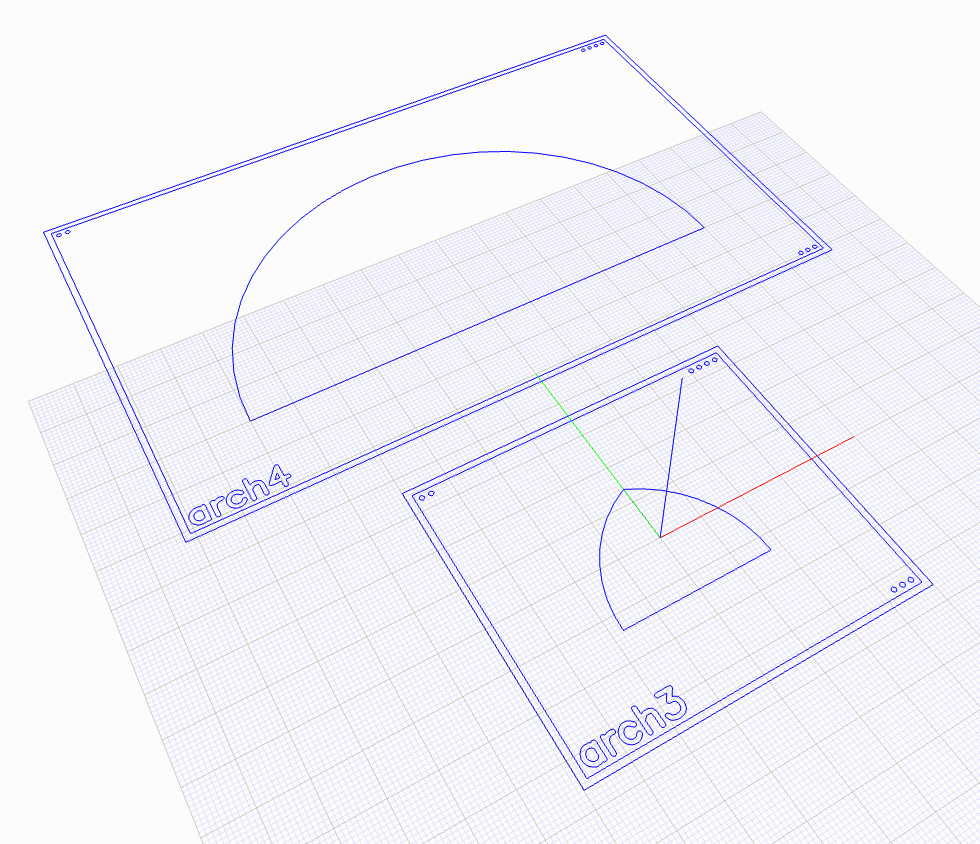
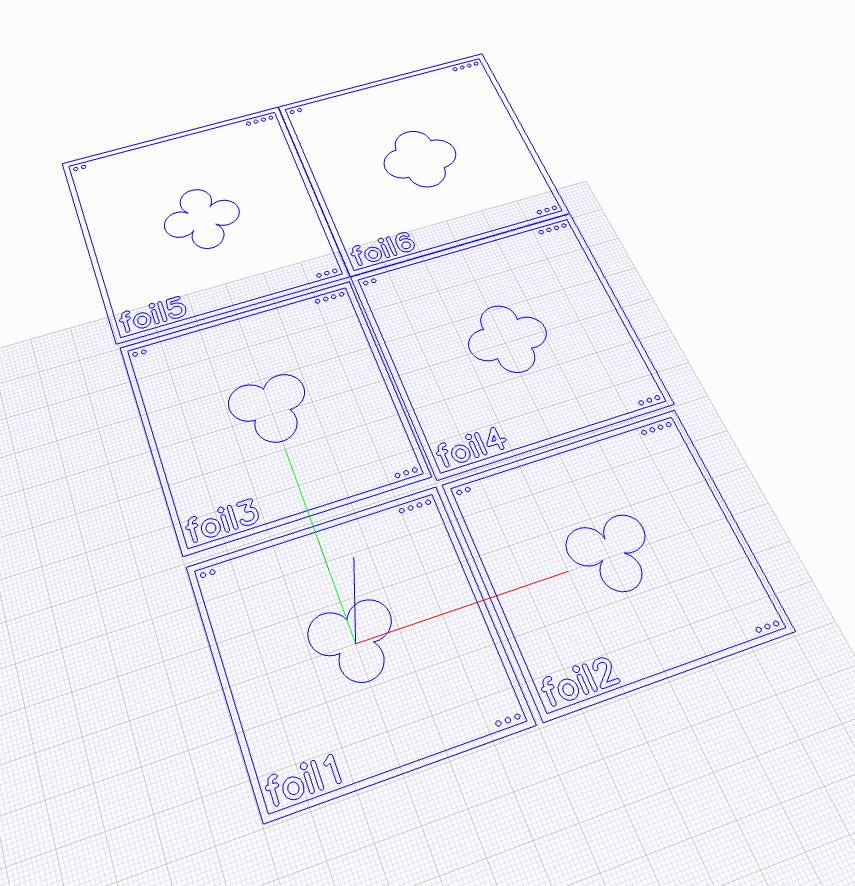
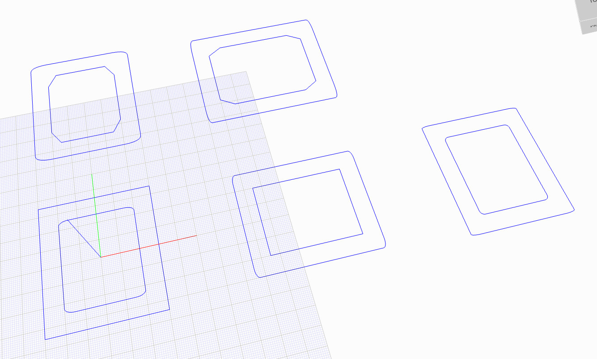
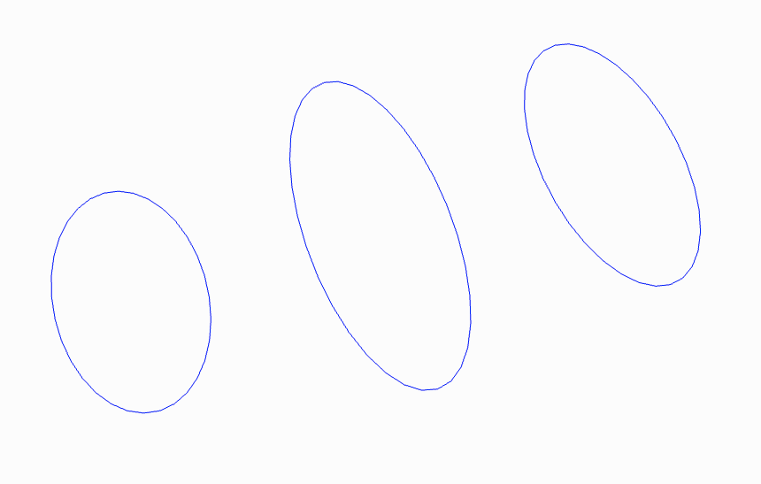
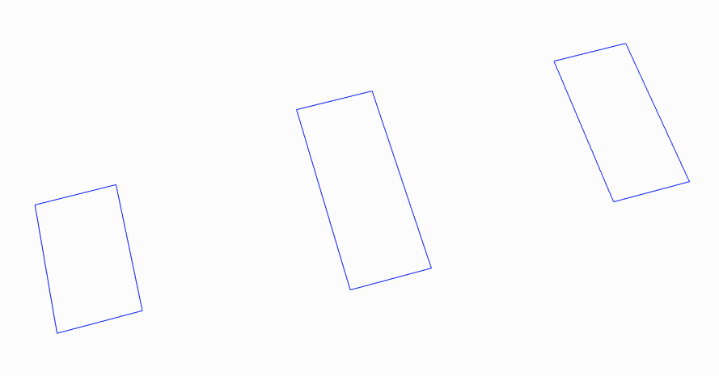
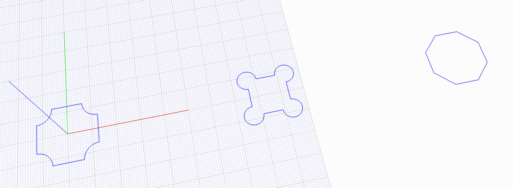
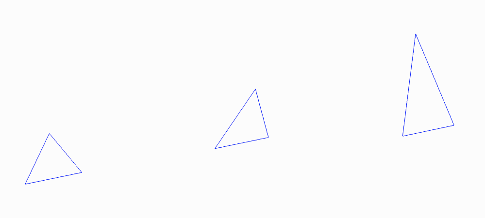
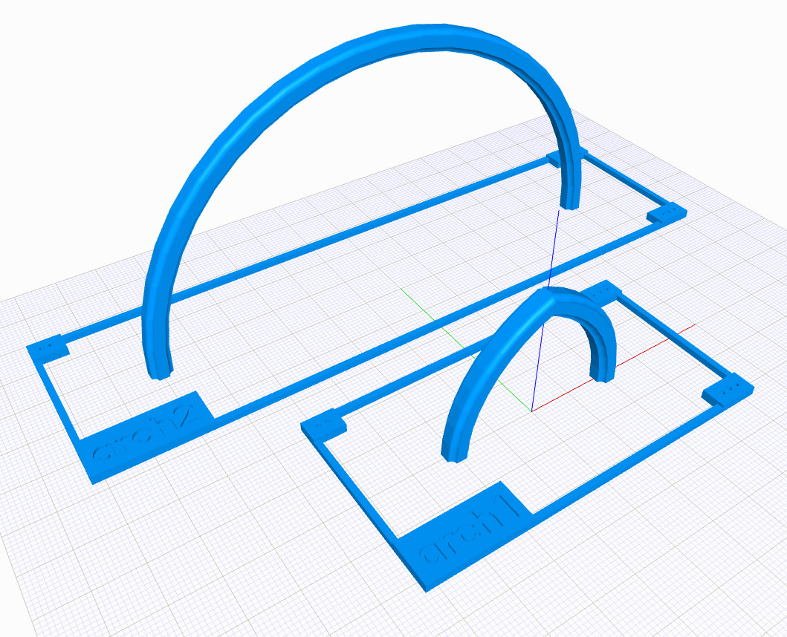
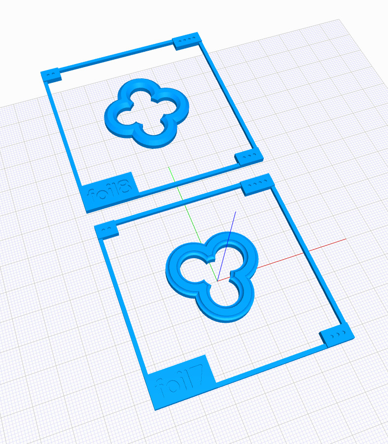
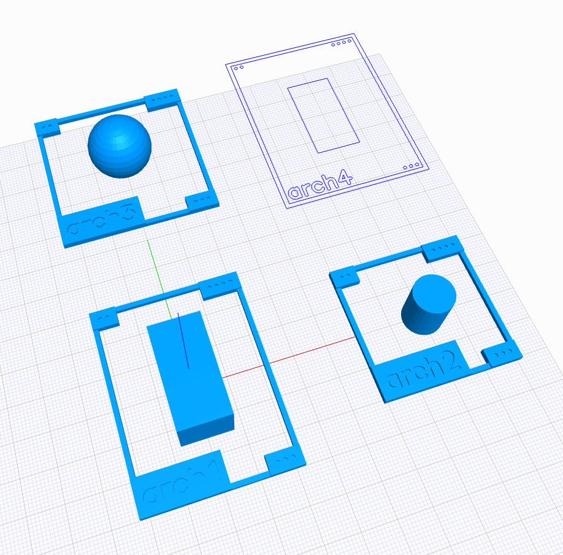

swcad-js-helpers
Various helper functions for the SWCAD-JS sytem.
Also some useful prototypes that may eventually be "promoted" to the main library.
SWCAD-JS Helpers API
SWCAD-JS Helper functions and utilities.
DATA
Mostly math constants and common dimensions/options.
data.constants
Numeric constants and ratios.
data.functions
Functions that support data initialization and access.
camelCase(str)
Converts the given string to camel case, using spaces/whitespace as delimiters.
constantToCamelCase(str)
Converts constant-style strings (capitals w/ underscores) to camel case.
data.standards
Dimensions and options used throughout the SWCAD-JS system.
CALCS
Math calculations and basic JSCAD operations.
calcs.position
Functions leveraging JSCAD to get position data or move 2D/3D geometries.
calcs.position.rectangle
Calculations around rectangle positions.
getRectangleCoords(rectGeom)
Gets 3D bounding coordinates for a given rectangle.
getRectangleCorners(rectGeom)
Gets 3D bounding corners for a given rectangle.
calcs.geometry
Geometric calculations in 2D/3D space.
calcs.geometry.triangle
Geometric calculations for triangles.
rightTriangleOpts(opts)
Sets up triangle creation from the given parameters. If valid, returns triangle creation strategy (AAS, ASA, SAS, etc) and values for jscad.primitives.triangle(). If invalid, returns null.
PROFILES
Modelling functions that generate 2D geometries.
profiles.arch
Modelling functions for 2D arches.

onePtArch(opts)
Generates a one-centre (semicircular) arch.
twoPtArch(opts)
Generates a two-centre pointed arch.
profiles.curve
Modelling functions for curves.
profiles.curve.rightCorner
Modelling functions for right-angle corner curves.
bronze(opts)
Generates a right-angle corner curve with axis lengths corresponding to the Bronze ratio.
copper(opts)
Generates a right-angle corner curve with axis lengths corresponding to the Copper ratio.
golden(opts)
Generates a right-angle corner curve with axis lengths corresponding to the Golden ratio.
plastic(opts)
Generates a right-angle corner curve with axis lengths corresponding to the Plastic ratio.
silver(opts)
Generates a right-angle corner curve with axis lengths corresponding to the Silver ratio.
sixtyThirty(opts)
Generates a right-angle corner curve with axis lengths corresponding to a 30-degree right triangle's sides.
superGolden(opts)
Generates a right-angle corner curve with axis lengths corresponding to the Super-golden ratio.
profiles.foil
Modelling functions for 2D "foils" (geometric shapes formed by overlapping circles) such as trefoils, quatrefoils, cinquefoils, etc.

cinquefoil(opts)
Generates a cinquefoil outline.
octofoil(opts)
Generates an octofoil outline.
quatrefoil(opts)
Generates a quatrefoil outline.
sexfoil(opts)
Generates a sexfoil outline.
trefoil(opts)
Generates a trefoil outline.
profiles.rectFrame
Modelling functions for rectangular frames with various corner options.

rectangularFrame(opts)
Generates a rectangular frame with the given corner options (interior and exterior).
profiles.shapes
Modelling functions for various basic shapes.
profiles.shapes.polygons
Modelling functions for various polygons.
octFromDiam(opts)
Generates an octagon from a given diametre.
profiles.shapes.ellipse
Modelling functions for various ellipses.

bronze(opts)
Generates an ellipse with axis lengths corresponding to the Bronze ratio.
copper(opts)
Generates an ellipse with axis lengths corresponding to the Copper ratio.
golden(opts)
Generates an ellipse with axis lengths corresponding to the Golden ratio.
plastic(opts)
Generates an ellipse with axis lengths corresponding to the Plastic ratio.
silver(opts)
Generates an ellipse with axis lengths corresponding to the Silver ratio.
sixtyThirty(opts)
Generates an ellipse with axis lengths corresponding to a 30-degree right triangle's sides.
superGolden(opts)
Generates an ellipse with axis lengths corresponding to the Super-golden ratio.
profiles.shapes.rectangle
Modelling functions for various rectangles.

bronze(opts)
Generates a rectangle with side lengths corresponding to the Bronze ratio.
copper(opts)
Generates a rectangle with side lengths corresponding to the Copper ratio.
golden(opts)
Generates a rectangle with side lengths corresponding to the Golden ratio.
plastic(opts)
Generates a rectangle with side lengths corresponding to the Plastic ratio.
silver(opts)
Generates a rectangle with side lengths corresponding to the Silver ratio.
sixtyThirty(opts)
Generates a rectangle with side lengths corresponding to a 30-degree right triangle's sides.
superGolden(opts)
Generates a rectangle with side lengths corresponding to the Super-golden ratio.
profiles.shapes.square
Modelling functions for various squares.

cornerCircNotch(opts)
Square with circular notches at corners.
cornerCircles(opts)
Square with circles at corners.
profiles.shapes.triangle
Modelling functions for various triangles.

equilateral(opts)
Generates an equilateral triangle.
right30(opts)
Generates a right triangle with a 30-degree angle.
right45(opts)
Generates a right triangle with a 45-degree angle.
rightBronze(opts)
Generates a right triangle with side lengths corresponding to the Bronze ratio.
rightCopper(opts)
Generates a right triangle with side lengths corresponding to the Copper ratio.
rightGolden(opts)
Generates a right triangle with side lengths corresponding to the Golden ratio.
rightSilver(opts)
Generates a right triangle with side lengths corresponding to the Silver ratio.
COMPONENTS
Modelling functions that generate 3D geometries.
components.arch
Modelling functions for 3D arches. Input 2D profiles must be centred at [0, 0, 0].

onePtArch(opts, geomProfile)
Generates a one-centre (semicircular) arch using a given 2d cross-section profile.
twoPtArch(opts, geomProfile)
Generates a two-centre pointed arch using a given 2d cross-section profile.
components.foil
Modelling functions for 3D "foils" (geometric shapes formed by overlapping circles) such as trefoils, quatrefoils, cinquefoils, etc. Input 2D profiles must be centred at [0, 0, 0].

cinquefoil(opts, geomProfile)
Generates a cinquefoil opening using a given 2d cross-section profile.
octofoil(opts, geomProfile)
Generates an octofoil opening using a given 2d cross-section profile.
quatrefoil(opts, geomProfile)
Generates a quatrefoil opening using a given 2d cross-section profile.
sexfoil(opts, geomProfile)
Generates a sexfoil opening using a given 2d cross-section profile.
trefoil(opts, geomProfile)
Generates a trefoil opening using a given 2d cross-section profile.
UTILS
Various utility helpers, mainly for the final modelling output.
utils.colors
A set of named colour presets and their translucent versions. References color palette from Material Design (https://www.google.com/design/spec/style/color.html)
utils.layout
Utilities for arranging sets of 2D/3D geometries into various layouts, with additional options for rendering text labels and descriptions.

addToLayout(opts, geom)
Adds element to the layout.
clearLayout(opts)
Clears all the layout elements.
gridLayout(opts)
Renders a grid layout.
linearLayout(opts)
Renders a linear layout.
removeFromLayout(opts)
Removes an element with the given ID from the layout.
utils.palette
Collections of colour presets grouped into palettes. References color palette from Material Design (https://www.google.com/design/spec/style/color.html)